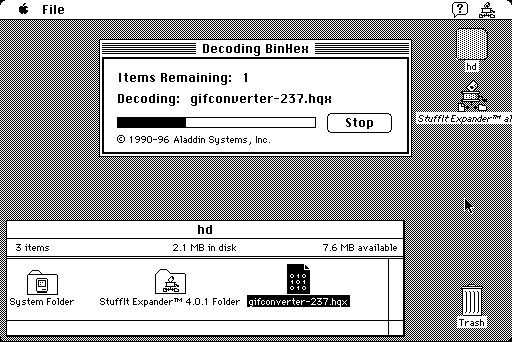

Download
stuffit_expander_40.zip (201K) Stuffit Expander 4.0.1 repackaged into a zipped hfs disk image and checksum file. The disk image can be mounted with Mini vMac.
stuffit_expander_40.bin (205K) Stuffit Expander 4.0.1 in the original format.
copyright: Aladdin Systems, Inc.
mod date: Apr 29, 1996
license: free for non-commercial use
last known url
(gone)
Decodes StuffIt and CompactPro archives, BinHex, and MacBinary. Requires System 6.0.5 or later. Smith Micro Software continues to develop Stuffit Expander for OS X. (Stuffit Expander on Wikipedia)
Expander Enhancer, that comes with DropStuff, allows Stuffit Expander to decode many additional archive kinds.
Stuffit Expander 4.0.1 works better in System 7, but still can be used in System 6. The issue in System 6 is that Stuffit Expander will only offer to expand files with the correct Macintosh file type, and files often don't have that type. But if you hold down the command key before selecting "Expand" from the "File" menu, Stuffit Expander will offer to expand all the contents of a folder, regardless of file type. So to expand a file, put it in a new folder, and expand that folder. (Make sure to hold down the command key before pressing the mouse button.) (That is the emulated “command key”. When running Mini vMac on Windows, for example, this normally means pressing the “Alt” key. See the keyboard documentation.)
In System 7, you can drag any file onto the Stuffit Expander application icon, regardless of file type.

Download other versions
stuffit_expander_45.bin (500K) Stuffit Expander 4.5 in the original format.
stuffit_expander_55.bin (827K) Stuffit Expander 5.5 in the original format.
Version 4.5 seems to work on a Macintosh Plus (for System 7), except that the about windows are partly offscreen, and not movable. The installer for version 5.0 insists that 8M of RAM is required.
Version 5.5 is the last that will run on Macintosh 680x0. It requires Color QuickDraw, and so doesn't work on a Mac Plus. It seems to work in the current (incomplete) Mini vMac Macintosh II emulation.
If you find these downloads useful, please consider helping the Gryphel Project, which hosts them.
Here are the md5 checksums for the downloads, signed with Gryphel Key 5:
--------- GRY SIGNED TEXT --------- 55ec22b4d688818b712a43e230262086 stuffit_expander_40.zip 01a7a9ac358db35b1386f1e418e70e80 stuffit_expander_40.bin 374dd6d3f04e863ccf7fb36d83028633 stuffit_expander_45.bin ec9caa38f84e5004af7d9f391de348ff stuffit_expander_55.bin ------- BEGIN GRY SIGNATURE ------- Gry/4Xa8CFcUzxdN/BQibgmvQD1XOCa/ml0A6U2rVc0qDxN13H782zxUJLFlgtaQ S4FiSaOZpsOxAgb1ppa7yb2UY6ZNTomVN6t6RwOu1AnliB5hMytLBTvLZ7kpTBMS aZ8+8ZVDpHzoPVdeQVs6KvSX4bl5Y+9CBxSX9qmWv4jzmMV3CsqrlWZcHMscPFhy -------- END GRY SIGNATURE --------